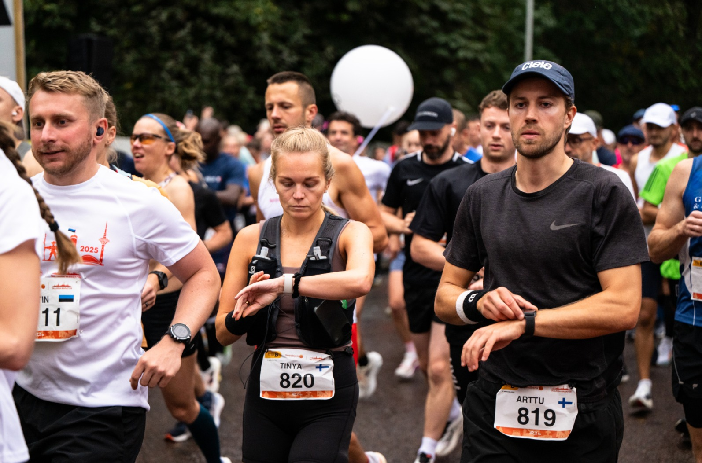
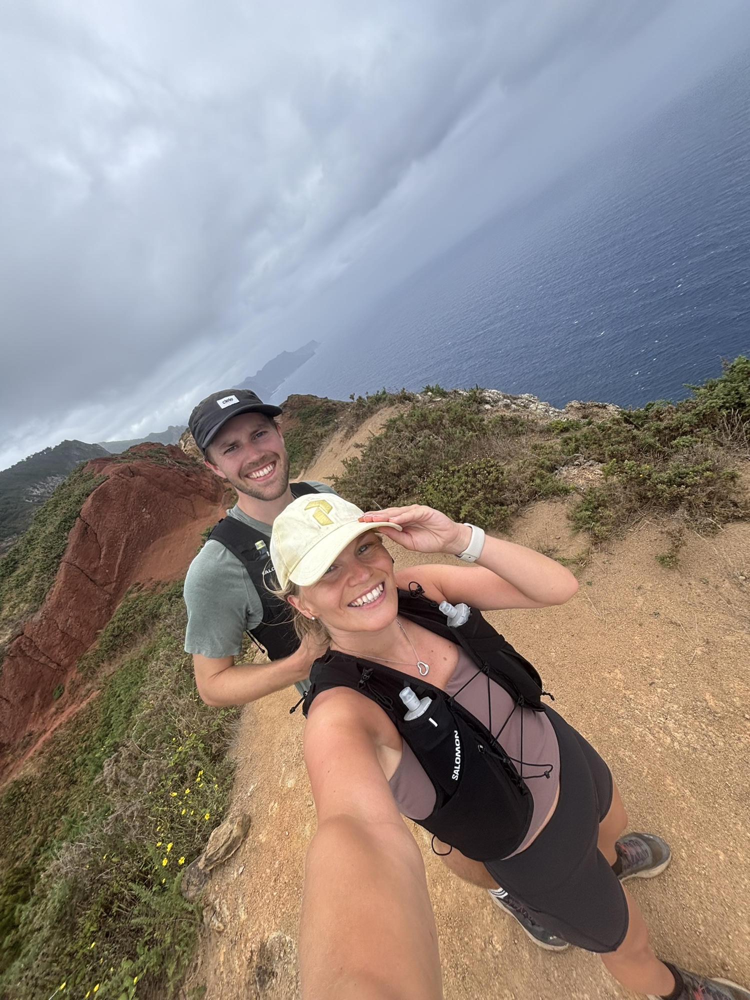
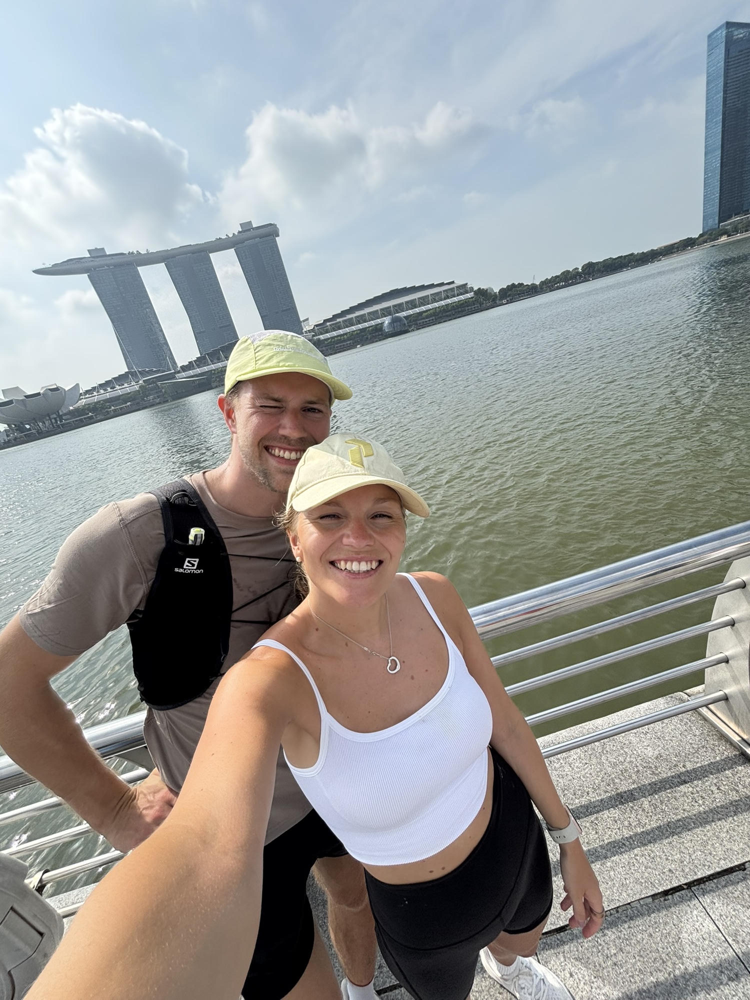
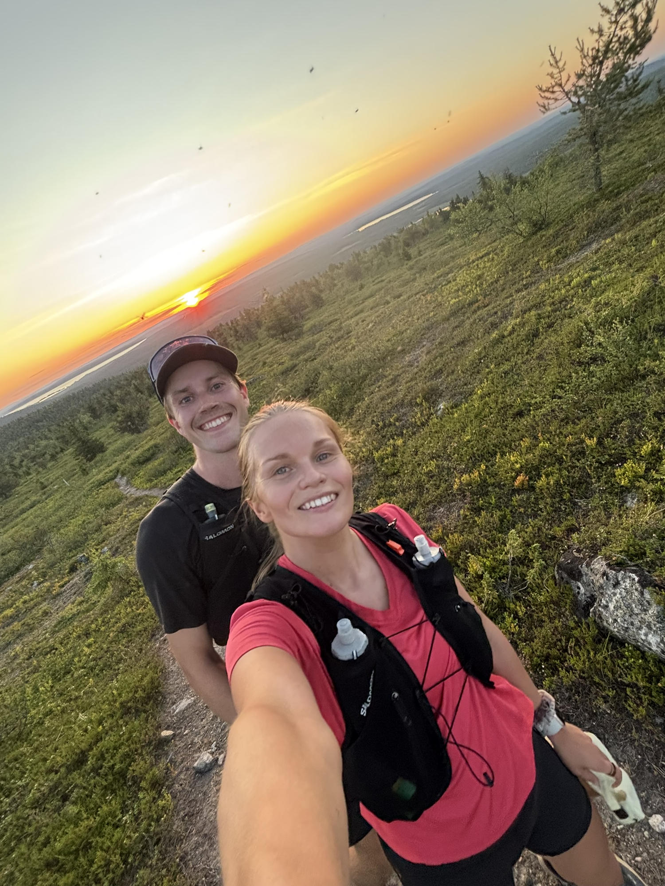
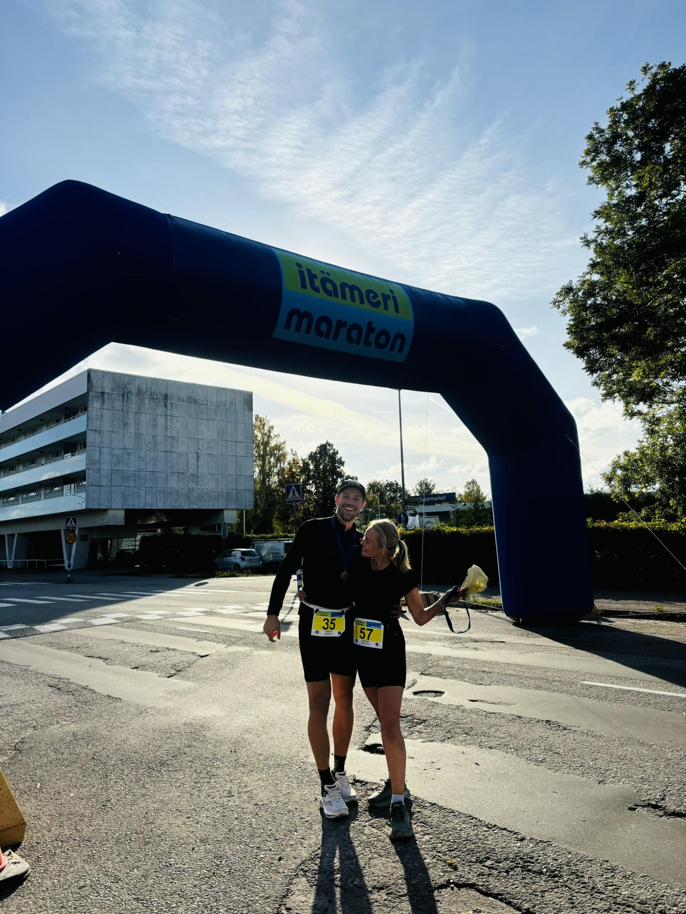
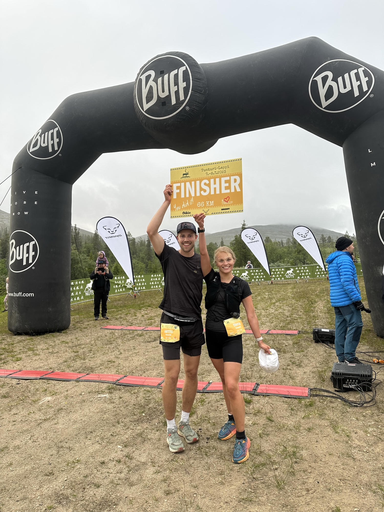
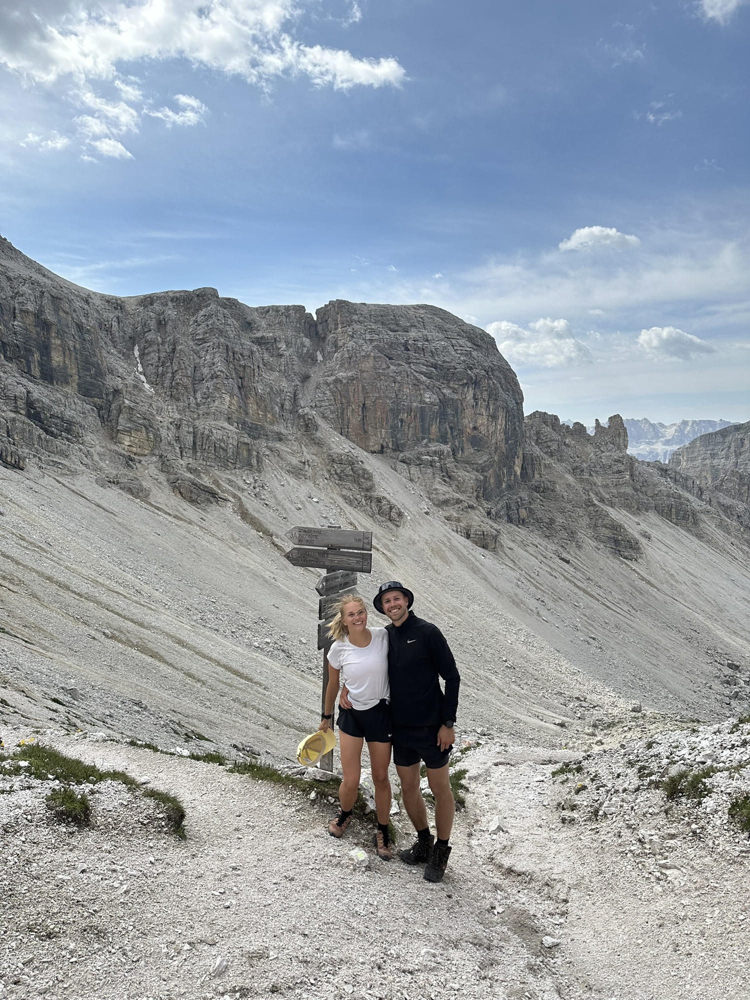

UMBRIA, ITALY / 20.05.2027
BORGO
BACKYARD.
THE UNOFFICIAL WEDDING 21K
THURSDAY · 20 MAY 2027 · UMBRIA, ITALY
TUTUSTU TAPAHTUMAAN ↓
THE RACE
NOBODY ASKED FOR.
Jos olette joskus ihmetelleet, miksi meidän mielestä on täysin normaalia lähteä juoksemaan kymmeniä kilometrejä ihan vapaaehtoisesti, niin nyt teillä on mahdollisuus ottaa asiasta itse selvää!
Torstaina Umbrian kukkuloilla juostaan nimittäin historian ensimmäinen Borgo Backyard – meidän ikioma, erittäin epävirallinen mutta sitäkin vakavammin otettava hääviikonlopun juoksutapahtuma.
Konsepti on yksinkertainen: kolmen kilometrin kierros, uusi lähtö 30 minuutin välein ja yhteensä seitsemän kierrosta. Jokainen kierros lähtee yhdessä, mutta juostaan omaan tahtiin. Mitä nopeammin juokset kierroksen, sitä pidempään ehdit levätä, tankata ja kyseenalaistaa päätöksiäsi ennen seuraavaa lähtöä.
Voit juosta yhden kierroksen, kolme tai kaikki seitsemän. Mukaan saa hypätä missä vaiheessa tahansa, eikä omaa kierrosmäärää tarvitse päättää etukäteen. Kaikki kierrokset suorittamalla kasassa on 21 kilometriä, seitsemän yhteislähtöä ja seitsemän kierrosta.
Osallistumiseen ei kuitenkaan tarvita ultrajuoksukokemusta, uusia lenkkareita tai edes erityisen suurta kiinnostusta juoksemiseen. Yksi kierros riittää. Tai kaksi. Tai seitsemän. Myös kävelijät, kannustusjoukot ja huoltopisteen asiantuntijat ovat lämpimästi tervetulleita.
Ja jos jossain vaiheessa päätät, että kolme kilometriä riittää ja Aperol kutsuu, sekin on täysin hyväksyttävä tapa osallistua.



THE COURSE.
Lähtö ja maali sijaitsevat hääkylällä. Reitti kulkee Umbrian kukkuloilla, ja jokainen kierros päättyy takaisin Race Villageen. Tarkempi reitti, korkeuserot ja mahdolliset muut yllätykset julkaistaan lähempänä tapahtumaa.
Jokaisesta suoritetusta kierroksesta ansaitaan merkintä omaan osallistujapassiin. Seitsemän kierrosta suorittaneet saavat lisäksi virallisen Borgo Backyard Finisher -statuksen.
RACE VILLAGE
& AID STATION.
Mikä olisikaan kunnon polkujuoksutapahtuma ilman huoltopistettä?
Lähtö- ja maalialueella palvelee Borgo Backyardin virallinen huoltopiste. Huoltopiste palvelee osallistujia koko tapahtuman ajan. Myös omat geelit ja muut suorituskykyä parantavat eväät ovat sallittuja.
04 / SUPPORT CREW
OFFICIAL
SUPPORT CREW.
Etkö aio juosta metriäkään? Erinomaista. Tarvitsemme myös ammattilaisia kannustusjoukkoihin.


